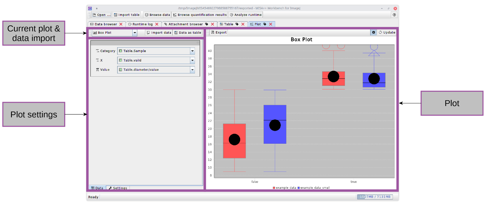

Creating plots
The integrated plot tool can create various plots from table data.

The user interface is divided into three sections:
The plot
The plot type and data import/export options
Plot data and additional settings
The plot is displayed on the right side
and can be exported into publication-ready formats via the
 Export
action. You can disable the automatic update when plot settings or
data is changed by disabling the
Export
action. You can disable the automatic update when plot settings or
data is changed by disabling the
 Automatically
update plot button.
Automatically
update plot button.
The plot type can be selected in the current plot and data import section, which also has following actions:
Actions |
Description |
|
The current plot type |
|
Imports columns from a table. Imported data series will be named <Table Name>.<Column Name>.
Tip: Use the
|
|
Exports the currently loaded data as table. |
 Plot
type
Plot
type Import
data
Import
data Rename buttons in the tab list to rename tabs.
Rename buttons in the tab list to rename tabs. Data
as table
Data
as table